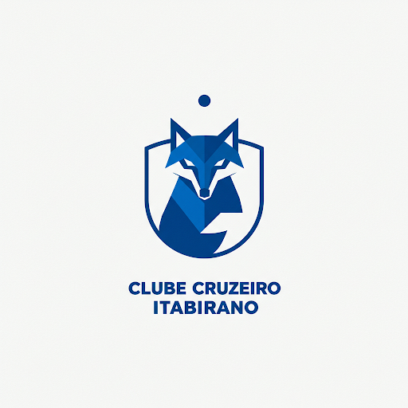

CLUBE CRUZEIRO ITABIRANO
História: O Clube Cruzeiro Itabirano foi fundado em 1925 por um grupo de amigos apaixonados pelo futebol e Cruzeiro Esporte Clube . Desde então, o clube cresceu e se tornou um ícone local, conquistando diversos títulos regionais e se destacando por sua atuação comunitária. Ao longo dos anos, o time tem se dedicado a formar não apenas atletas, mas também cidadãos comprometidos com o bem-estar social.
Missão: Promover o futebol como uma ferramenta de transformação social, incentivando a prática esportiva e a cidadania entre crianças, jovens e adultos, e proporcionando entretenimento de qualidade para nossa comunidade.
Visão: Ser reconhecido como um dos principais times de futebol do Brasil, não só pelos resultados em campo, mas também pelo impacto positivo na sociedade e pela gestão transparente e eficiente.
Valores:
- Paixão: Viver o futebol com intensidade e entusiasmo.
- Ética: Atuar com integridade e responsabilidade em todas as ações.
- Inovação: Buscar constantemente novas formas de aprimorar a gestão e o desempenho esportivo.
- Comunidade: Ser um agente de desenvolvimento local, apoiando causas sociais e incentivando a participação da comunidade.
- Sustentabilidade: Promover práticas que assegurem a preservação ambiental e o bem-estar social.
Serviços:
Escola de Futebol:Treinamento para crianças e adolescentes com foco no desenvolvimento técnico, tático e comportamental.
Eventos e Campeonatos:Organização de torneios e eventos esportivos para promover a integração social e a prática esportiva.
Parcerias:Colaborações com empresas e organizações locais para apoiar projetos sociais e ambientais.